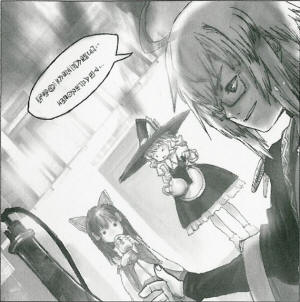
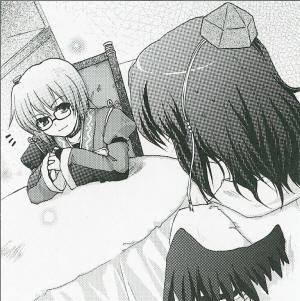

| Season 115, 4th of the Leaf Month (August) Mysterious Luxury Items
Arrive at Kourindou
The nargile, for leisurely enjoying tobacco The arrival of a large, mysterious pot at Kourindou, the antique store by the forest's entrance, was begging to become a topic. Its height is that of a person's hip, so it is very big indeed. According to the Kourindou's owner, it's called a nargile. According to the store owner, the nargile is a type of tobacco-water smoker, one which you can use to enjoy the tobacco slowly over a very long period. If it is for smoking tobacco, however – with its huge pot and mouthpiece-looking pipes, and even a plate on the pot's top opening – it is quite different from the tobacco smoking tools we all know. Besides, even the owner said he had not even the slightest idea of how to use it. “Being a tobacco inhaler, I would think you use it to ignite tobacco and inhale the smoke, but for this one to involve water into it... it seems incompatible. If it is a tobacco-water inhaler, you would think you use water in it, but how it makes the water give off smoke is something I don't know.” So said Kourindou's owner, Rinnosuke Morichika (Half-human, half-youkai). The store's owner went on explaining: "This nargile would make a splendid decoration, it looks like a pot but is not a pot, looks like a light but is not a lighthouse; its incongruous form is magnificent. You are likely to never have the chance to obtain such a thing again. You will definitely regret it if you don't buy it now. It's a one-time-only article.” Kourindou is a place where usable-looking items fallen from the outside are gathered and sold. So, besides not knowing when the next arrivals will come, the same items might not show up again. Interested people that don't mind not knowing how to use it, and are fine having it for decoration, should then go buy it right away. The price is open to bargain. As for me, I've never seen smoking tools other than a pipe, and I wouldn't really want such a big one that is impossible to carry around. But since I believe this one is for smoking calmly while sitting down, people that would want to pass the afternoon tea time leisurely having an elegant smoke might as well consider purchasing it. (Aya Shameimaru)
|
|
 Aya It's been quite a while since that article. Did you sell it after all? Rinnosuke The nargile? It's not for sale anymore, I took it out. Aya Is that so? Well, for something that big... without knowing how to use it, it would never sell. Rinnosuke There were a lot of people who showed interest. It's just that I changed my mind about selling it. Aya Was there a defect in the article, then? Rinnosuke I figured out how to use it. That's why I put it out of sale. Aya Excuse me? Rinnosuke It would've been a waste, wouldn't it? I might never have the chance to obtain another one. Aya Ahh, so you are keeping it for your own use? ...But can your business carry on like that? Rinnosuke Business or not, a terrible waste is a terrible waste. Aya I don't quite understand your reasons for opening a shop. Besides, being that close to the forest, I don't think humans actually come. Are you really intent on doing business? Rinnosuke That's a rather complex question. It will take me some time to answer it... wait a moment. Aya Complex, was it...? Rinnosuke This is the nargile. Aya Yes, I know that. Rinnosuke The preparations take some time, but once lit, the tobacco lasts for more than one hour. You put the burning charcoal here, and then the tobacco here. And about your earlier question, of course I'm fully intent on doing business. Aya I see, so that's how it's smoked. And how did you figure out how to use it? Rinnosuke It came in a flash, while I was in the middle of some trial and error. It was when a youkai that knows a lot about the outside world taught it to me. Aya So, someone taught you? You didn't have to say it like you had figured it out by yourself, then. Rinnosuke Not only does smoking with this take longer than usual but, once you start, you can't carry it around with you. That's why it's ideal for smoking while reading a book or having a tea. Aya That's why you said you didn't want to sell it anymore... Rinnosuke And I won't; it's not for sale. Aya And I don't want to buy it. Isn't a tobacco smoker this big a little inconvenient? And the water, what is it for? Rinnosuke The water... is to weigh it down so it doesn't collapse, I guess. Aya Quite a nonsensical smoker, right? Rinnosuke Aren't all luxury goods nonsensical to begin with? But if it weren't for people who can't appreciate them, there wouldn't be any interesting people. People that appreciate luxury goods like liquor, teas, coffee, tobacco, and the like are always seen as very interesting people. Aya Speaking of which, people who live away from the human village are all into luxury goods. People who like luxury items are all strange ones indeed. Rinnosuke And they are mostly self-centered folk, if I might add.
Morichika Rinnosuke Owner of the antique store Kourindou. Seems like he opened the store more as a hobby than as a business. Appearances: Curiosities of Lotus Asia |
| [PREVIOUS ARTICLE : Suika] | [INDEX] | [NEXT ARTICLE : Reimu] |